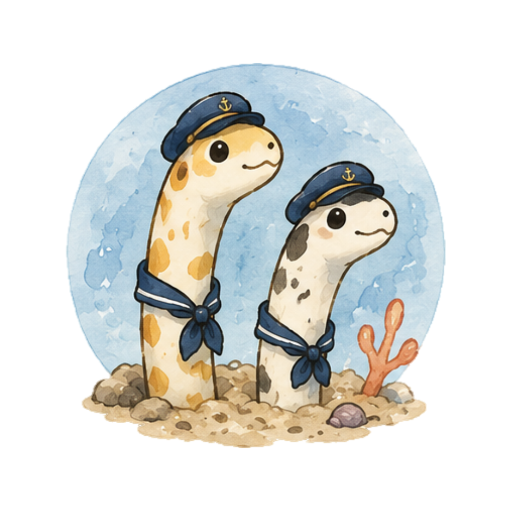

船隊文化
每艘船都有自己的航行默契！了解我們的文化與工作規範，跟上大家的步調，成為可靠的船員！
Scrum Schedule (Scrum 行程)
一個 Sprint 為期兩週，兩週各有不同的 Scrum 會議安排。
| Mon (Support Leave) | Tue | Wed | Thu | Fri | |
|---|---|---|---|---|---|
| Week 1 |
10:00-12:00 PBR 12:00-13:00 Sprint Planning Part I 14:00-16:00 Sprint Planning Part II |
11:00 Support Daily 14:00 Cross-team Daily |
11:00 Support Daily 14:00 Cross-team Daily |
11:00 Support Daily 14:00 Cross-team Daily |
11:00 Support Daily 14:00 Cross-team Daily |
| Week 2 |
10:00-12:00 PBR 12:00-13:00 Design Refinement |
11:00 Support Daily 14:00 Cross-team Daily |
11:00 Support Daily 14:00 Cross-team Daily |
11:00 Support Daily 14:00 Cross-team Daily |
10:00-12:00 Sprint Review 12:00-13:00 PD Time 14:00-15:30 Sprint Retro 15:30-16:30 Overall Retro |
TWSC's Scrum Event v2026.06
Cross-team Collaboration
Working Agreement (工作協議)
Cross-team Working Agreement · 2026-01-09 TWSC Overall Retro
為了降低公車係數和確保品質，我們實施跨 team testing
為了降低公車係數，我們需要落實 team pair and sync
為了讓 support 專心處理線上問題，同時避免掉球，team item 交接 or release follow up 應該由 team 執行（team ↔ team／support ↔ support）
-
為了避免有 business loss
- 我們要確實測試要上線的 code & feature
- IDR／MMK 必須測試 3 個 0 的問題
-
為了避免資訊落差
- handover 可以制定格式讓不同 team member 可以有效交接
- 看過之後也需要留言告知
-
為了解決 item deadline 太趕的問題
- 團隊如果發現無法在預期時程內完成，要提早告知 PO／DM
- 由 PO／DM 進行時程的溝通協調
-
為了更好管控 designer 臨時插件問題
- PD & designer 可以共同開 item 紀錄內容及結果
- 由 designer 向 PO 同步
- designer or PD 在 slack channel 同步資訊
- team 協助開 item 在 daily board
-
為了避免在設計中同時要與 writer 對齊
- design & wording 要先一起溝通和設計，再把結果 sync to PO
-
為了避免開發中才發現 design flow or wording 有缺，需要 designer or writer 緊急趕工
- refine 過的 item 如果超過兩個月都沒進開發，就需要重新順 flow + wording（可考慮重新 refine）
-
為了讓團隊 & PO co-work 更順利
- 對單一功能的細節可以跟客戶直接進行確認
- 跟其他 product line 的合作會需要 PO 協助
- 鼓勵設計師直接跟客戶聯絡，取得回饋
如果未來沒有可以彈性支援的機動團隊，那就把所有需要做的事都開成 item，跟合作的產品線討論價值和緊急程度，再依照優先順序排進團隊的 backlog
和 Leo 有關的 item，先找 PIC 才進 PBR or 開 survey item
🚩 各團隊 Working Agreement
 Manta
Manta
🕚 Time
- Manta time：14:00 - 17:00
- Daily：11:00（after Support Daily）
- Handover：第一個下班的人要提醒團隊貼 handover 到 channel
- 有會議可以優先 book 10:00 - 11:00 的時間
💻 Dev agreements
- use digital scrum board
- Sprint Goal 貼在 handover title
- Task 要盡量拆成 E2E
SP2
- Define the API detail and Table format.
- Define toggle／branch (feat/TWSC-xxxx) at first
- Sync result to PO after SP2
開發過程
- Core logic need pair with「*」sign on task
- Add prod data need to be 4 eyes
- 下班前把做好的 commit 都推上去，並測試確保主要流程正常或有 toggle／branch 保護
- Refactor 要在隨時可停的範圍
Code review
- Daily 後 code review
- Release 前 code review
Sprint Review
- Review 時多分享 monitor item 的情況
- Review 前一天下午前準備 review document & 寫好擺攤資訊
- 跨部門／產品線合作的 item 讓至少 2 人以上和相關團隊一起 PBR，避免 bus factor
- 可以視情況確認是否需要全部團隊一起去
🌟 Team cultures
- 當有人發起討論時，team 要給予回應
- example：想要 code review 就直接發起
- 將各種會議的 action 放在 slack channel 的 canvas 以供提醒
- ex：double link、overall retro、team retro…等
 Mola
Mola
🕚 上班時間
- 日常上班時間為 11:00 ~ 18:00（19:00）。
- 若遇到 issue，會加班處理。
☀️ After Daily
- 檢查若沒有與其他專案有相依性，就應該要 release。
- 進行 code review。
👥 Pair
- 在開 task 時決定是否一定要 pair（must）。
- 若為 must pair 的 task，會加上標記「*」。
🔍 Code Review
- 至少要有 1 位事主（寫 code 的人）與 1 位公正第三方（沒有一起 pair 的人）共同進行 code review。
- 要 release 時，一定要先完成 code review。
- 若說明不清楚，要退件處理。
- 例如：AI 寫的 code，但開發者無法清楚解釋其邏輯。
- Code review 時機：
- daily 結束後。
- 累積 ≥ 4 張 task 時。
🧪 品質與測試
- Focus on item 的品質，落實「有邏輯就有測試」。
- Review 時要分享 monitor（監控）的情況。
⏰ Mola Time
- 保留 Mola time：14:00 ~ 17:00。
📅 請假與會議紀錄
- 請假時需在 calendar 上註記。
- 開會或請假時，要主動通知其他成員。
👀 資料異動（4 eyes 原則）
- 新增資料（Add data）時，需要「4 eyes」確認。
📝 Planning Part 2
- Part 2 需要落實相關邏輯與關係，例如：
- Project Name
- Function Name(包含 parameters)
- Part 2 的詳細資訊可以記錄在白板或電子版上：
- 要將 task 實際要做的內容列出來。
- 排出各 task 的 priority（優先順序）。
🤝 跨團隊合作
- 跨部門／跨團隊合作前，需先進行簡易 domain 交流。
- 雙方先各自提出 solution，並互相了解後，再一起調整 solution 方案。
- 會議以整個 team 優先參與；若人力不足，再由代表參加。
🔄 Handover 注意事項
- handover 時要先 sync 隔天誰會不在，避免沒有交接到。
- 交接內容需完整紀錄在各自的 task 中。
🚀 Release Plan（有相依功能）
- 有相依的功能要 release 時，需先列出 release plan。
📄 線上文件管理
- 線上版文件下載後要留紀錄。
- 文件放在 Domain Document 中。
- 若 Provider 頻繁修改文件，請通知 PO。
🔐 BO 帳號與敏感資訊
- 將 BO 帳號等敏感資訊透過 PMS 加密後，放到 Domain Document。
- Owner：@Larson Gao
🌳 Master 分支狀態
- 確保 master 隨時可被 release。
⚙️ GlobalSetting／SP 設定
- 新增 GlobalSetting 或 SP 時，要在 handover 中記錄其 release 狀態。
📋 Handover
- handover 時間為 17:30。
- Project、GlobalSetting、SP 的狀態。
- 各 item 的 status（今天實際做了哪些內容）。
- 遇到的困難、瓶頸與學習。

Garden eel
🗓️ Daily
- Daily 時間 11:00（等 Support Daily 之後）
- 依照領的 item 決定要不要共同 daily
- 若 sprint 內有設計 & 開發共同製作的 item，將會共同 daily
- 若 sprint 無設計 & 開發共同製作的 item，將分開 daily
- 需提供兩個信心指數 — PD／Designer
- Jira 將採用電子板
🔁 Double link／Cross-team daily／Cross-team retro／retro
- 將安排輪值表進行上述活動
📌 需遵守的原則
- 早到晚退（11–18）需要在 team 說明
- 團隊內可以放音樂
- Design review 需要額外約會議室，Garden eel 最少要有兩位 PD 參加，且會議需發公告
- 若有溝通不好理解的狀況，可以視覺化內容
- 不在 team room 開非團隊的會議，若有需要額外租會議室
👥 PD-related
- PD 盡量兩人在團隊，Support 需要隔週 support
- 若有 code 出現之後再做的狀況，可以記錄下來之後再找時間處理
💻 開發模式
- 需要 Pair 時，向團隊提出並討論
- Pair 以討論開發方向與釐清需求為主
- 完成第 ii 點後，可以各自獨立開發
🧭 Mindset
- 前端按照 task 順序 by task code review
 Otter
Otter
🗓️ Daily
- 信心指數：1、2、4、5
- Task 數不算
- 10:30 開始
- review 前一天的 daily 要討論要不要寫 review document
📋 JIRA Board
- 設 label 在 task 上
🗣️ English Day（週四）
- 每週四為 English Day
🕚 上班時間
- 10:00～18:00：早到早走
- 10:30～18:30：晚到晚走
- 核心工時
- 14:00～17:00
🔄 Handover
- 隨時記錄，不特別找時間（以 PD、PO 角度思考內容可讀性）
👥 Pair
- 標記有需要 pair（重要 flow）
🔍 Code(Task) Review
- Daily 後發生或主動發生
- 包含 Test plan、Release Note
- 可以 release 就直接 release
- 保持 master 可 release
♻️ Retro Action
- 看到貼就 OK
Definition of Done (DoD - 完成的定義)
🎨 Design Item DoD
- Item 須紀錄 Goal、設計背景、Survey 資訊
- User Flow 須經過 Team & PO & Designer Review 並記錄 Domain 文件
- UI Flow demo 資訊需貼近產品真實使用情境
- 視覺類需求（e.g. greeting card、banner），須經過 PO & Stakeholder review 並完成修改
- Wording 有 final 版本
⚙️ PD Item DoD
- 完成需求，符合 AC（e.g. monitor / UI 與 Figma 一致 / 寄送 release note 並 inform 相關人員）
- 有 2 分鐘內可執行完成的 Rollback Plan
- 文件更新（e.g. domain doc / SOP / Review doc / README / .md / test plan）
- Release 前，通過 E10 以上的 Reviewer Code Review（包含：update query, store procedure）
- 有規劃的手動測試（e.g. 貼近 Prod 環境執行 Test Plan / 由非開發團隊 Validate）
- 通過程式碼品質標準（e.g. Sonarqube）
- Release to Prod 後需測試 main flow（e.g. deposit / Live Chat …）
QBQ 閱讀任務
QBQ 閱讀心得
《QBQ! 問題背後的問題》是入職必讀書籍，探討個人當責與主動思考的重要性。
繳交時間：第 4 週
要求：閱讀全書並撰寫閱讀心得